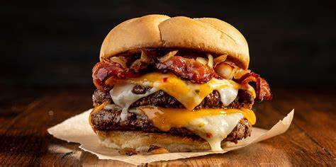
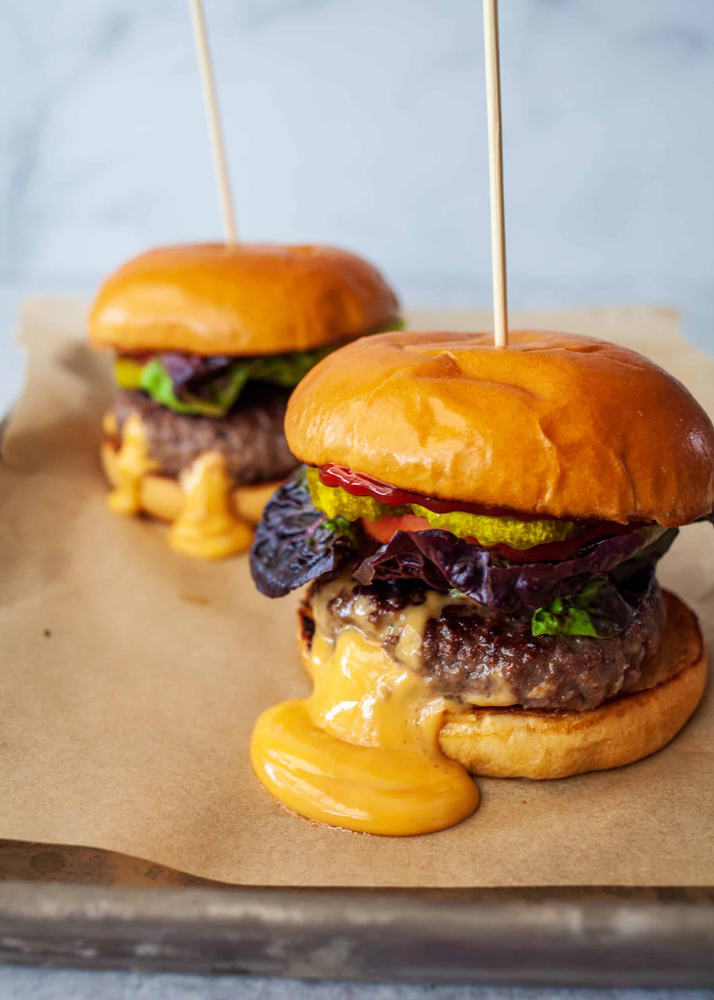
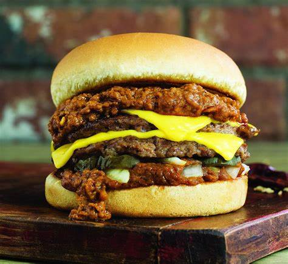

A cheeseburger is a hamburger with a slice of melted cheese on top of the meat patty, added near the end of the cooking time. Cheeseburgers can include variations in structure, ingredients and composition. As with other hamburgers, a cheeseburger may include various condiments and other toppings such as lettuce, tomato, onion, pickles, bacon, avocado, mushrooms, mayonnaise, ketchup, and mustard.
Hailing from Minneapolis, Minnesota, the Juicy Lucy is a unique burger characterized by a cheese-stuffed beef patty that creates a molten cheese core when cooked.
The Chili burger, smothered in chili, offers a deliciously messy and indulgent feast.Typically served with cheese, onions, and jalapeños, this burger has become a staple of American diner culture, demonstrating the versatility of the traditional burger.
